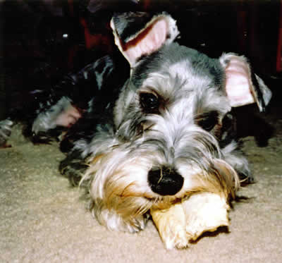
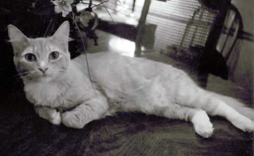

Ah, the Pets. Well, to be more accurate, the more recent pets. It sucks that I don't actually get to see this little rascals as much as I wish I could, but that's ok. When I do get the opportunity for some pet time...I do enjoy it. Well, they are very special, and both have some of the most interesting and remarkable personalities.
I suppose, since you're here, you might as well check out Brandy's Page. Lily and Joey are really awesome pets, but no one can replace the immaculate Brandy. I swear, one day, I will have an immaculate cocker spaniel like her. This page is good, but unlike the Brandy Page, it doesn't have psycho dogs attacking the camera. You can't miss that!

This is Joey. He's a little bitch, and don't you doubt it! He lives up in Ohio with my mom, but I do get to see him every now and then. I don't think I've found a little boy dog who was such a wimp, I mean, he's practically a girl. He does worship the ground I walk on though, and he gets real depressed whenever I come up to Ohio and have to leave again. When he used to live around here, I used to take him on walks up Kennesaw Mountain. They were alot of fun, he always had so much energy to burn. In fact, on one of his more shameful outings, we were walking down this hill, and he got all scared because someone was walking up the same trail. It was a little girl! My dog got scared of a little girl, like she was going to attack him or something. Oh, yah, and he's also afraid of the dumpster outside of my mom's apartment. He is an uber-wimp.

This is Lily. Well, I guess the most remarkable thing about Lily is that she has emotional problems. Since she was a kitten, she's always been a little brat. I was there the day she was born. Her mother was a stray we brought in out of the cold who happened to be pregnant. When her five kittens got old enough, we had to take them to the Humane Society, but I begged my mom to keep the smallest kitten (who I insisted on naming Buffy). When I got home, I noticed all the kittens were gone, including little Buffy. It wasn't until a few hours later that I realized little Buffy (later named Lily) was infact still around, just hiding in a chair. She started whining for attention, and you know what—she never stopped!
My sister keeps tabs on the cat now. She hasn't forgotten me, and when I do come home, she comes running, hopeing that I'll pick her up and give her a nice kitty massage. She's very odd, she insists on making me follow her to her bowl of Deli Cat so I can pet her while she eats. She also insists on being let out all the time, though she tends to get in fights with the neighborhood cats.
These pets may not be the preetiest animals in the world—and they're certainly not the smartest—but they are mine. I love them very much!
My sister keeps tabs on the cat now. She hasn't forgotten me, and when I do come home, she comes running, hopeing that I'll pick her up and give her a nice kitty massage. She's very odd, she insists on making me follow her to her bowl of Deli Cat so I can pet her while she eats. She also insists on being let out all the time, though she tends to get in fights with the neighborhood cats.
These pets may not be the preetiest animals in the world—and they're certainly not the smartest—but they are mine. I love them very much!